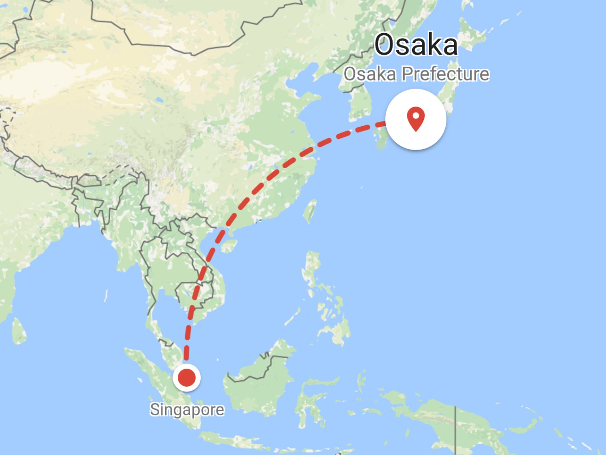
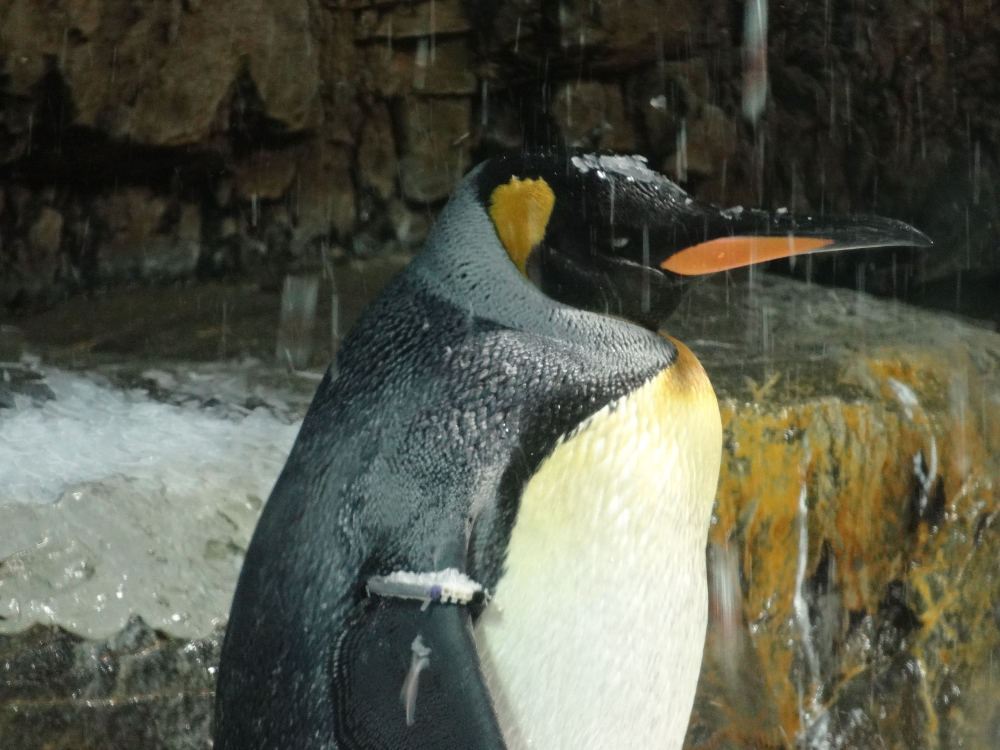
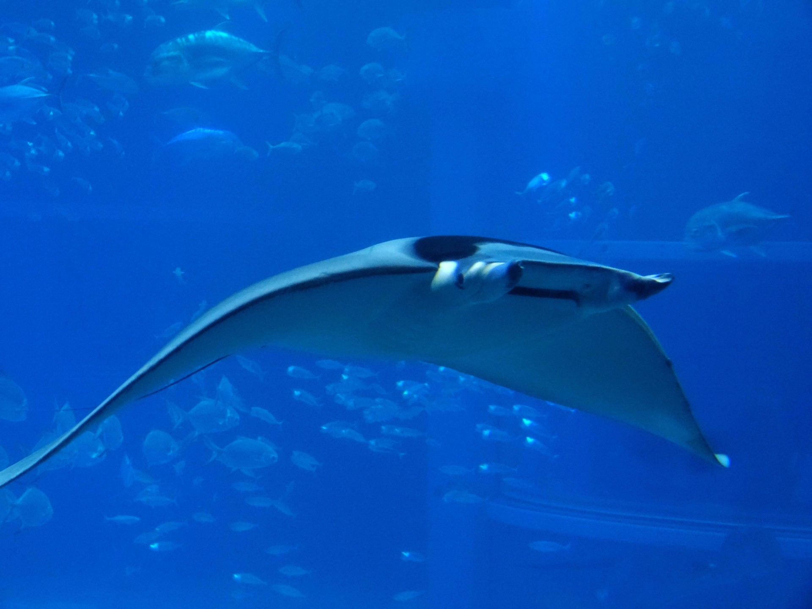
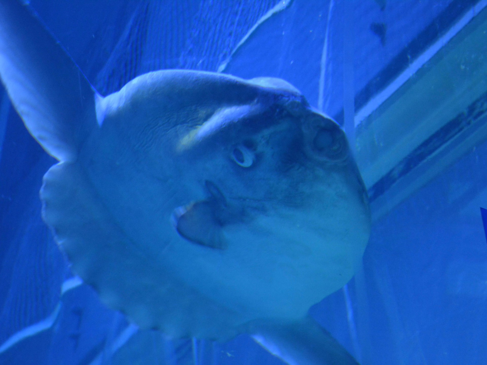
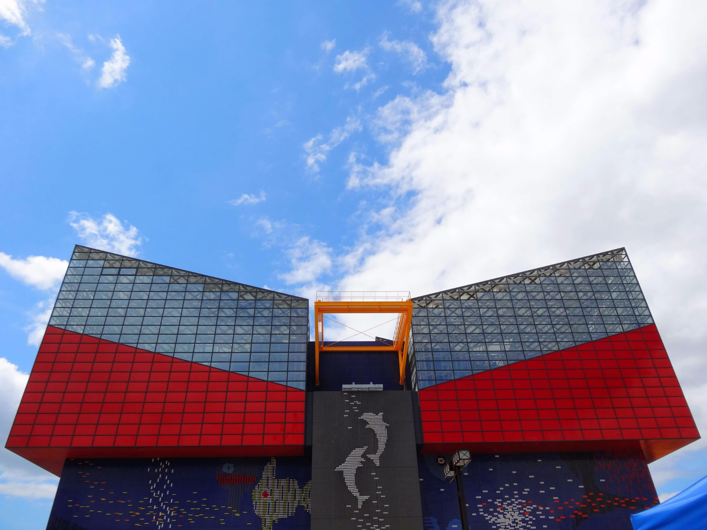
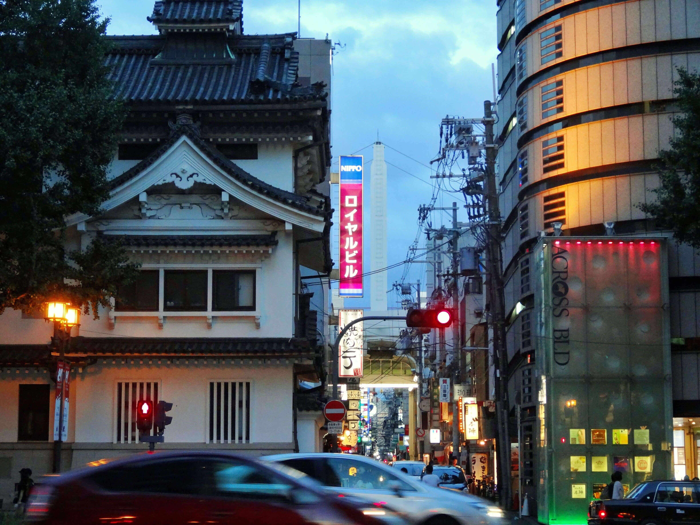
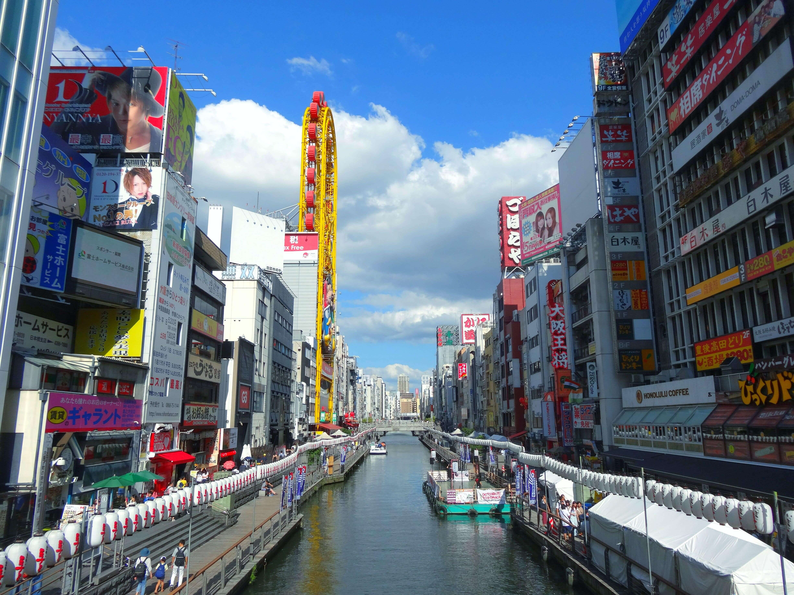

Osaka
12 Aug - 14 Aug
DAY 1
singapore osaka
My trip started out with a flight from Singapore to Osaka through Kuala Lumpur where Avery joined me.
After acquiring the tickets for the last train for the night, we headed towards Tennoji station for the transfer to the Osaka Loop Line. We exited the train, looked around and stood there confused. We new we had 3 minutes to make the transfer but couldn't find any directions for the other line.
Yes, on our first day, within the first hour, we had missed a transfer on the last train of the night. We were forced to take a taxi to the airbnb that night costing us an exorbitant ammount of money.
DAY 2
osaka
海遊館
kaiyukan
(osaka aquarium)






道頓堀
dōtonbori
Filled with small food stalls and restaurants, dōtonbori is foodie heaven.
Here we ate at Daruma Kushikatsu (fried meat skewers), tried Osaka's famous takoyaki and finished off the day with dinner at Matsusaka M.


DAY 3
osaka kyoto

大坂城
ōsaka-jō
(osaka castle)
Day three started out with a trip to Osaka Castle. We bought breakfast at a small bakery then took the metro over to the castle.
For lunch, we roamed around the Temna Station and stumbled upon a small yakinuki place. The freshly grilled meat skewers tasted amazing!
After lunch, we checked out of our airbnb and headed back to the station to take the train to Kyoto.